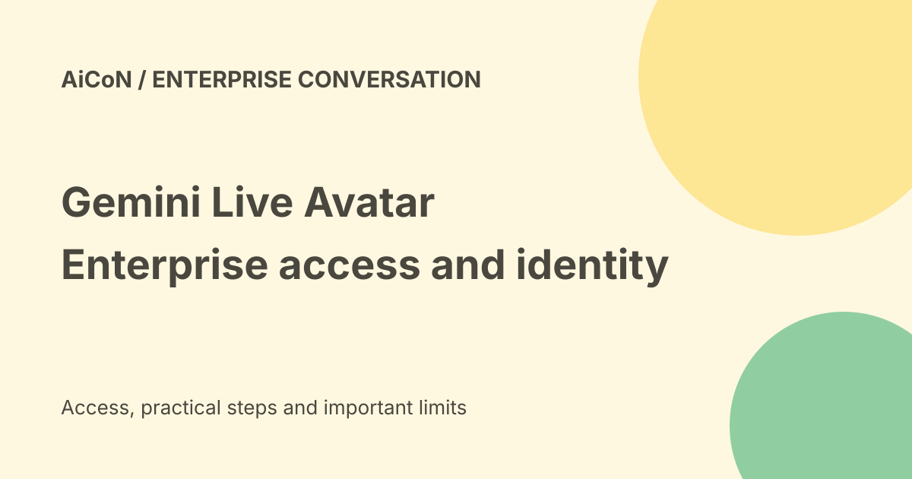

Gemini 3.8 Live Avatar: enterprise access, API differences and safety
Google introduced Gemini 3.8 Live with Live Avatar on 24 September 2026 for Gemini Enterprise. It combines conversation with generated visual presence. The general Gemini Live API documentation lists text and audio output, so ordinary Live API access should not be treated as an automatic entitlement to avatar video. Custom avatar creation also requires enterprise allowlisting.

What is Live Avatar?
Google describes near-real-time visual presence paired with its live dialogue model. The avatar can respond with speech, facial expression and synchronised lip movement.
These are Google's feature claims, not an independent latency or accuracy benchmark. A convincing face does not make the underlying answer correct.
Enterprise uses
The announcement gives customer service and interactive walkthroughs as examples. It also shows a hotel check-in demonstration where work continues during dialogue.
A demonstration is not proof that an agent is authorised to check in a real guest, charge a card or change a booking. Your application must enforce its own action and approval limits.
Asynchronous tool calls
Asynchronous means a tool can do work in the background while the conversation continues. This can reduce pauses, but the agent still needs to handle errors and report the real result.
Keep important actions separate from conversational filler. Saying a request is being handled is not confirmation that it succeeded.
Languages and local testing
Google says the avatar can switch across ninety-seven languages with speech, expressions and lip movement aligned.
That aggregate claim does not establish the quality of every Malayalam accent, specialised term or noisy call. Test your actual audience and tasks before deploying a service in India.
Preset versus custom avatars
The announcement describes a library of preset avatars and customisation from a high-quality reference image.
Custom avatar creation is available only through enterprise allowlisting. A standard account or API key is not proof that this permission has been granted.
General Live API is a different access surface
The Google AI developer page for gemini-3.8-live lists text, image, audio and video inputs, but text and audio outputs. Its migration notes say audio is the supported response modality and transcription can provide text.
Do not infer visual-avatar output merely because video input is accepted. Enterprise avatar documentation and accepted access must cover the feature you intend to build.
Enterprise documentation and regions
The checked Google Cloud enterprise model page lists Live Avatar video output and model availability in the US and EU multi-regions and us-central1.
It does not list an Indian serving region in that table. Availability from India, data residency and legal suitability are different questions. Confirm your contract, project region and permitted data flow.
Is there a free consumer avatar app?
The checked announcement describes Gemini Enterprise, not a free consumer-avatar feature in the ordinary Gemini app.
No final India-local price, tax-inclusive total or free avatar allowance was verified. Do not apply an audio-model rate or a general Gemini subscription price to avatar video without the matching offer.
Identity and reference images
A custom avatar can preserve the likeness of a reference image. Use only an image you have the right and consent to use for that purpose.
Do not impersonate a colleague, customer, public figure or official. Make it clear to viewers that they are speaking to an AI service.
Watermarking is not a visible warning
Google says its generated audio and video output is watermarked with SynthID. It describes that watermark as imperceptible.
That does not mean every viewer can spot the watermark or prove a call is genuine. Keep visible disclosure and separate identity checks for requests involving money or private data.
A careful enterprise pilot
- Confirm the exact enterprise feature and accepted access.
- Check whether custom avatars require allowlisting.
- Review regions, data handling and current pricing.
- Use a consented identity or a clearly fictional avatar.
- Set allowed tools and approval gates.
- Test errors, interruption and misleading requests.
- Measure real latency and language quality.
- Verify AI disclosure and support escalation.
- Launch only after the pilot meets your requirements.
No avatar, account, allowlisting request or paid session was created here.
What changed since the original post?
We add the custom-avatar allowlisting limit, separate enterprise visual output from the general audio API and explain the region and identity risks. A lifelike interface does not replace verification or account-specific access.
Frequently asked questions
Does ordinary Live API access guarantee an avatar?
No.
Can I use anyone's face?
Only with the necessary rights and consent.
Was India availability tested?
No account-specific Indian access or checkout was tested.
Sources: Google Live Avatar announcement · General Live API model and output limits · Enterprise model output and region table. Checked 7 October 2026.